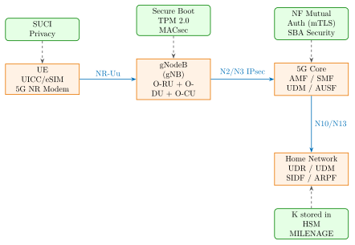
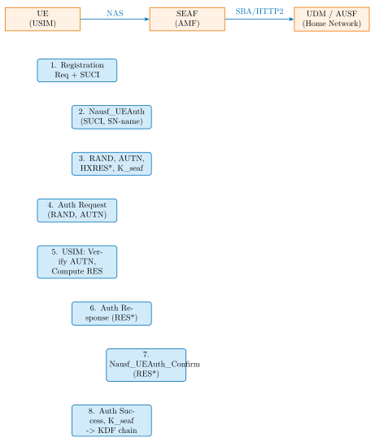

Chapter 29: 5G and Telecom Hardware Security¶
29.1 Introduction¶
5G and telecommunications hardware security encompasses the silicon security of base stations, core network processors, subscriber identity modules, and the network function virtualization infrastructure that runs the 5G core. Unlike general IT systems, telecom hardware must authenticate billions of subscribers at millisecond latency while resisting sophisticated nation-state adversaries who have physical access to the radio interface and may control intermediate network elements. The introduction of Open RAN (O-RAN), which disaggregates hardware and software from different vendors, introduces new attack surfaces at software-hardware interfaces that previously existed only within a single-vendor proprietary stack.
Security threats to 5G span the full protocol stack: the UICC/eSIM hardware storing the subscriber’s permanent identity, the air interface over which the UE exchanges authentication vectors, the gNodeB (gNB) base station that must be protected from software tampering, the 5G Core network functions implemented as cloud-native workloads, and the legacy SS7 and Diameter signaling protocols that remain interoperable with 5G for roaming. Each layer requires hardware-specific security controls that go beyond software configuration.
This chapter provides a comprehensive technical treatment of 5G authentication hardware, UICC and eSIM security, base station secure boot and attestation, O-RAN security architecture, legacy signaling vulnerabilities, network function virtualization security, and quantum-safe migration paths. Specific chipsets, evaluation platforms, and protocol message flows are referenced throughout.
29.2 5G Network Architecture and Security Domains¶

The 5G architecture per 3GPP TS 23.501 separates security into three main domains:
-
Access Security: Protection of the NR-Uu interface between UE and gNB, including SUPI/SUCI privacy, NAS and RRC ciphering (128-AES-EEA, 128-SNOW3G, 128-ZUC), and integrity protection (128-AES-EIA, 128-SNOW3G, 128-ZUC).
-
Network Domain Security: IPsec ESP (AES-256-GCM) on N2, N3, Xn interfaces between network functions, and TLS 1.3 on SBA (Service Based Architecture) HTTP/2 interfaces.
-
User Plane Security: End-to-end encryption between UE and UPF using a session-specific key derived from the 5G-AKA exchange.
29.3 UICC and eSIM Hardware Security¶
29.3.1 Physical UICC Architecture¶
The Universal Integrated Circuit Card (UICC) is a tamper-resistant smart card implementing the 3GPP USIM application. Hardware security features include:
-
JavaCard OS: UICC firmware runs on JavaCard 3.0.4 with GlobalPlatform 2.3.1 security domain management. The USIM applet is loaded into an isolated security domain.
-
Cryptographic Accelerators: AES-128/256 for MILENAGE and TUAK; ECC P-256 for eSIM profile authentication; SHA-256/384 for integrity; TRNG meeting AIS-31 statistical requirements.
-
Physical Protection: Active mesh of fine conductors over the die surface detecting probe attempts; light sensors triggering zeroization on decapsulation; frequency monitors rejecting clock glitching; voltage detectors rejecting supply manipulation.
-
PIN/PUK Protection: After 3 consecutive wrong PIN entries, the USIM application is locked. After 10 wrong PUK entries, the card is permanently blocked per 3GPP TS 31.102.
29.3.2 SIM Cloning Attacks¶
Historical SIM cloning attacks exploited weak cryptographic implementations in 2G (A3/A8 COMP128v1). The COMP128v1 algorithm was broken in 1998 by Briceno et al., requiring only 150,000 adaptive chosen challenges. Modern UICC using MILENAGE (AES-128) or TUAK (Keccak-f[1600]) is not practically clonable; however, physical hardware attacks remain concerns for high-value targets:
-
Power Analysis: DPA on MILENAGE AES-128 requires approximately \(10^4\) traces; countermeasure is masking with random shares.
-
Fault Injection: Laser fault injection on ECC key operations during eSIM profile installation; mitigated by computation redundancy checks.
-
eSIM Profile Extraction: Extraction of the ECIES private key from an unprotected eUICC flash using microprobing; mitigated by dedicated secure memory with hardware encryption.
29.3.3 IMSI Catchers (Stingrays)¶
IMSI catchers exploit the lack of network-to-UE authentication in 2G and partially in 4G (no NAS integrity for Attach Request before security mode). In 5G, the SUCI mechanism encrypts the SUPI (IMSI) on the air interface using the home network’s public key, preventing IMSI harvesting:
# SUCI construction (3GPP TS 33.501, Sec. 6.12.2)
# UE generates ephemeral ECDH key pair using Curve25519 or secp256r1
# Home network public key K_hnpub is pre-provisioned in USIM
# ECIES-based SUCI encryption (Curve25519 profile A):
ephemeral_privkey = generate_x25519_private()
ephemeral_pubkey = X25519(ephemeral_privkey, G) # base point
# Shared secret via ECDH:
shared_secret = X25519(ephemeral_privkey, K_hnpub)
# Key derivation (ANSI X9.63 KDF with SHA-256):
icb = KDF(shared_secret || ephemeral_pubkey, 16) # enc key
MAC = KDF(shared_secret || ephemeral_pubkey, 32) # MAC key
# Encrypt MSIN (mobile subscriber ID number, 5-10 digits):
encrypted_MSIN = AES-128-CTR(icb, MSIN)
mac_value = HMAC-SHA256(MAC, encrypted_MSIN)[0:8]
# SUCI = MCC | MNC | routing_indicator | protection_scheme_id
# | ephemeral_pubkey | encrypted_MSIN | mac_value
Only the home network’s SIDF (Subscription Identifier De-concealing Function), which holds the private key corresponding to K_hnpub, can decrypt the SUCI and recover the SUPI. This cryptographically defeats passive IMSI catchers.
29.4 5G-AKA Protocol and Key Derivation¶
29.4.1 Protocol Message Flow¶

29.4.2 MILENAGE Algorithm Details¶
MILENAGE (3GPP TS 35.206) uses AES-128 as a block cipher core. Given subscriber permanent key K (128 bits) and operator key OPc (128 bits, derived from OP by XOR with AES_K(OP)):
# MILENAGE core computation (3GPP TS 35.206 Annex 3)
# Input: K (128-bit), RAND (128-bit), SQN (48-bit), AMF (16-bit)
# OPc = AES_K(OP) XOR OP (configured in USIM at personalization)
# Compute TEMP = AES_K(RAND XOR OPc)
TEMP = AES128(K, RAND ^ OPc)
# f1: Network Authentication Code (MAC-A, 64-bit)
IN1 = SQN[47:0] || AMF[15:0] || SQN[47:0] || AMF[15:0]
# rotate and XOR with OPc, then AES
MAC_A = AES128(K, rotate_left(TEMP^OPc, r1) ^ c1^OPc)[0:64]
# f2: Response (RES, 64-bit)
RES = AES128(K, rotate_left(TEMP^OPc, r2) ^ c2^OPc)[64:128]
# f3: Cipher Key (CK, 128-bit)
CK = AES128(K, rotate_left(TEMP^OPc, r3) ^ c3^OPc)
# f4: Integrity Key (IK, 128-bit)
IK = AES128(K, rotate_left(TEMP^OPc, r4) ^ c4^OPc)
# f5: Anonymity Key (AK, 48-bit) -- conceals SQN in AUTN
AK = AES128(K, rotate_left(TEMP^OPc, r5) ^ c5^OPc)[0:48]
# AUTN = SQN ^ AK || AMF || MAC_A
AUTN = (SQN ^ AK) || AMF || MAC_A
# 5G key derivation from CK, IK:
KAUSF = HMAC_SHA256(CK||IK, "5G AKA" || SQN^AK || SN_name)
KSEAF = HMAC_SHA256(KAUSF, "K_seaf" || SN_name)
KAMF = HMAC_SHA256(KSEAF, "K_amf" || GUAMI || separation_bit)
29.4.3 5G Key Derivation Hierarchy¶
The 5G key hierarchy produces session-specific keys from a single root K stored in the USIM HSM:
K (permanent, 128-bit, HSM-protected in USIM)
|
+-- KAUSF (derived per AKA run, known to AUSF and USIM)
|
+-- KSEAF (serving network anchor key, SEAF only)
|
+-- KAMF (AMF anchor key)
|
+-- KNASenc (NAS encryption: AES-128, SNOW3G, ZUC)
+-- KNASint (NAS integrity: AES-128-EIA2)
+-- KgNB (gNB anchor key)
|
+-- KRRCenc (RRC ciphering)
+-- KRRCint (RRC integrity)
+-- KUPenc (User Plane ciphering)
+-- KUPint (User Plane integrity, optional)
29.5 eSIM SGP.22 Profile Download Security¶
29.5.1 SM-DP+ and ISD-P Architecture¶
The GSMA SGP.22 Consumer eSIM specification defines a secure profile download architecture involving the SM-DP+ (Subscription Manager Data Preparation Plus) server and the eUICC (embedded UICC):
# SGP.22 Profile Download Sequence (simplified)
# Step 1: Device requests eSIM activation
GET /gsma/rsp2/es9plus/initiateAuthentication
-> SM-DP+ returns: serverSigned1 (ECDSA-P256 signed)
# Step 2: eUICC authenticates SM-DP+
GET /gsma/rsp2/es9plus/authenticateClient
Body: euiccInfo2 (eUICC capabilities, certificate)
SM-DP+ verifies eUICC certificate chain:
eUICC_cert -> EUM_cert -> CI_cert (GSMA root CA)
# Step 3: Profile package preparation
# SM-DP+ encrypts profile with eUICC public key:
# Profile_encrypted = ECIES_P256(eUICC_pubkey, Profile)
# Profile_signed = ECDSA_P256(SM-DP+ key, Profile_hash)
# Step 4: Profile installation on eUICC
# eUICC decrypts profile in ISD-P (Issuer Security Domain Profile)
# ISD-P is a separate secure domain per operator:
# - Cannot access other operators' ISD-P
# - Controlled by Controlling Authority Security Domain (CASD)
# - Profile contains: USIM application, operator credentials,
# MILENAGE K, OPc, algorithm preferences
29.5.2 ISD-P Isolation¶
Each operator profile installs into a dedicated ISD-P (Issuer Security Domain Profile) on the eUICC. The CASD controls creation and deletion of ISD-Ps. GlobalPlatform 2.3.1 security domain hierarchy ensures cryptographic isolation between profiles: operator A’s USIM applet cannot read operator B’s key material even if both are installed on the same eUICC.
29.6 gNodeB Secure Boot and Attestation¶
29.6.1 TPM 2.0 Integration¶
3GPP TS 33.117 requires base stations to implement platform integrity attestation before connecting to the 5G Core. A representative gNB hardware platform (Ericsson AIR 6449, Samsung RU for O-RAN) implements:
-
TPM 2.0 (Infineon SLB9670): Stores the Endorsement Key (EK) and Attestation Identity Key (AIK). PCR registers 0–7 measure firmware boot stages.
-
Measured Boot Sequence: UEFI/BIOS -> bootloader -> OS kernel -> 5G L1/L2 software stack. Each layer extends the appropriate PCR before executing the next.
-
Remote Attestation to 5GC: The AMF verifies the gNB’s TPM Quote (PCR set signed by AIK) against known-good values before accepting N2 registration.
# gNB TPM 2.0: Generate attestation quote for 5GC verification
# Using tpm2-tools on Linux
# Step 1: Create AIK (Attestation Identity Key) in TPM
tpm2_createak -G rsa2048 -g sha256 -s rsassa \
-C 0x81010001 -c ak.ctx -u ak.pub -n ak.name
# Step 2: Certify AIK with Endorsement Key (TPM proof of AIK)
tpm2_makecredential -e ek.pub -s ak.name -n ak.name \
-o credential.blob
# Step 3: At boot, extend PCRs with firmware measurements
tpm2_pcrevent -i /boot/vmlinuz sha256
# Step 4: Generate TPM Quote (signed PCR values for N2 attestation)
tpm2_quote -c ak.ctx -l sha256:0,1,2,3,4,7 \
-q $(openssl rand -hex 20) \ # nonce from AMF
-m quote.msg -s quote.sig -o pcrs.out
# Step 5: AMF verifies quote using gNB's certified AK public key
# Expected PCR[7] = SHA256(Secure_Boot_Policy || signing_cert_hash)
29.6.2 O-RAN Security Architecture¶
xApp Isolation in Near-RT RIC¶
The O-RAN near-real-time RAN Intelligent Controller (near-RT RIC) hosts xApps from multiple vendors. Security isolation requirements per O-RAN WG11 specifications:
-
Container Isolation: Each xApp runs in a Kubernetes pod with dedicated namespace, NetworkPolicy restricting E2 interface access, and PodSecurityPolicy enforcing read-only root filesystem.
-
E2 Interface Authentication: TLS 1.3 mutual authentication between E2 termination in the near-RT RIC and the E2 node (O-DU/O-CU), using certificates issued by the O-RAN CA.
-
A1 Policy Security: Non-RT RIC to near-RT RIC A1 interface uses TLS 1.3 with RBAC to restrict which xApps can receive policy updates.
-
xApp SDK Sandboxing: O-RAN SC (Software Community) xApp SDK provides a secure API abstraction; direct memory access to E2AP protocol buffers is prohibited.
O-RU Authentication¶
Open Fronthaul (eCPRI/7-2x split) authentication between O-DU and O-RU uses IEEE 802.1X EAP-TLS. MACsec (IEEE 802.1AE) provides layer-2 encryption and integrity protection on the fronthaul:
# O-RU MACsec configuration (Linux wpa_supplicant + ip macsec)
# On O-DU side:
# Step 1: 802.1X EAP-TLS authentication of O-RU
wpa_supplicant -i oru_fronthaul0 \
-c /etc/wpa_supplicant/oru.conf &
# wpa_supplicant config for O-RU:
# network={
# key_mgmt=IEEE8021X
# eap=TLS
# ca_cert="/etc/ssl/oran-ca.pem"
# client_cert="/etc/ssl/oru-cert.pem"
# private_key="/etc/ssl/oru-key.pem"
# }
# Step 2: After 802.1X auth, configure MACsec
ip link add link oru_fronthaul0 macsec0 type macsec \
cipher suite GCM-AES-256 icvlen 16 encrypt on
ip macsec add macsec0 rx port 1 address AA:BB:CC:DD:EE:FF
ip macsec add macsec0 rx port 1 address AA:BB:CC:DD:EE:FF \
sa 0 pn 1 on key 0A abc123... # 256-bit SAK
ip macsec add macsec0 tx sa 0 pn 1 on key 0B def456...
29.7 SS7 and Diameter Attacks¶
29.7.1 SS7 Vulnerabilities¶
SS7 (Signaling System No. 7) was designed in 1975 with no authentication; any entity with SS7 access can impersonate any network element. Critical attacks documented by Positive Technologies and exploited by nation-state actors:
-
Location Tracking: MAP_PROVIDE_SUBSCRIBER_INFO (PSI) returns subscriber Cell-ID and geographic location to any SS7 node that sends the request. Defense: SS7 firewall filtering PSI from non-home networks.
-
Call Interception: MAP_REGISTER_SS registers a call forwarding number controlled by the attacker. All incoming calls are silently forwarded before reaching the victim’s phone.
-
SMS Interception: MAP_SEND_ROUTING_INFO_FOR_SM reveals the HLR and MSC serving the target; MAP_MT_FORWARD_SHORT_MESSAGE redirects the SMS to the attacker.
-
OTP Bypass: The above SMS interception enables bypass of SMS-based two-factor authentication – documented in attacks on mTAN banking systems (Germany, 2017).
# SS7 attack example: Location tracking via MAP PSI
# Using SigPloit (research/educational framework)
from scapy.contrib.sigtran import *
from scapy.contrib.ss7.map import *
# Build MAP PSI request (attacker impersonates MSC)
psi_req = MAP_provide_subscriber_info_arg(
subscriberIdentity=IMSI("123456789012345"),
requestedInfo=requestedInfo(
locationInformation=None, # Request location
subscriberState=None # Request activity state
)
)
# SS7 defense: Per GSMA FS.11 baseline
# - Block PSI from foreign networks for home subscribers
# - Whitelist: Only allow MAP operations from known GT (global titles)
# - Anomaly detection: Sudden location change = alert
# - 5G migration: Replace MAP with SBA HTTP/2 (no SS7 exposure)
29.7.2 Diameter Vulnerabilities¶
4G/LTE uses Diameter protocol (IETF RFC 6733) for Cx, Sh, S6a, and Gx interfaces. Like SS7, Diameter was designed without strong authentication of the requesting node:
-
Cancel-Location Attack: Diameter Cancel-Location-Request (CLR) sent to HLR forces the victim’s device to re-register, enabling IMSI exposure during the re-attach procedure.
-
Insert-Subscriber-Data: Modifies subscriber profile to redirect services.
-
Authentication-Information-Request: Extracts authentication vectors from HLR if the attacker’s Diameter node is not properly authenticated.
Defense: IPsec between all Diameter nodes, Diameter Application-layer Security (IETF RFC 6733 + TLS), and Diameter firewall (Evolvent, Mobileum) filtering messages by AVP content, origin-realm validation, and rate limiting.
29.8 Network Function Virtualization Hardware Security¶
5G core network functions (AMF, SMF, UPF, UDM, AUSF) run as containerized microservices on COTS server hardware. Hardware security considerations include:
-
Intel TXT (Trusted Execution Technology): Measures BIOS, bootloader, and hypervisor into PCR registers before launching the 5GC workload. Used in Ericsson Cloud Core on Intel Xeon Scalable (Ice Lake, Sapphire Rapids) platforms.
-
AMD SEV-SNP (Secure Encrypted Virtualization – Secure Nested Paging): Encrypts VM memory with VM-specific keys in AMD EPYC 7003/9004 (Genoa) processors. Enables encrypted containers for UDM (which stores K values) even from the hypervisor.
-
Intel SGX: Provides Trusted Execution Environments for AUSF/SIDF operations involving SUCI decryption. Nokia Cloud BTS uses SGX enclaves for AMF NAS layer.
-
SmartNIC Security: NVIDIA BlueField-3 DPU (200 GbE, Arm Cortex-A78) implements IPsec offload for N3/N9 GTP-U tunnels, removing crypto from the host CPU and providing hardware-enforced packet filtering.
29.9 FPGA-Based 5G Baseband Security¶
FPGA implementations of 5G physical layer enable hardware security features not achievable in software-defined radio:
| Device | LUTs | FFs | BRAMs | DSPs | Fmax (MHz) | Power (mW) |
|---|---|---|---|---|---|---|
| Xilinx XC7Z045-2FFG900 | 48,420 | 52,180 | 218 | 900 | 245 | 4,800 |
| Intel Arria 10 GX 480 | 44,800 | 48,320 | 195 | 1,800 | 280 | 5,200 |
| Xilinx ZynqRFSoC ZCU111 | 39,600 | 44,100 | 152 | 2,928 | 300 | 6,100 |
| Intel Agilex 7 I-Series | 36,200 | 40,880 | 184 | 3,072 | 350 | 5,600 |
| Lattice Avant-E90 | 28,400 | 31,200 | 112 | 256 | 200 | 3,900 |
| Microsemi PolarFire MPFS460T | 31,800 | 35,400 | 142 | 784 | 225 | 2,800 |
| Xilinx VU19P-2FLGB2104 | 25,100 | 28,600 | 96 | 1,344 | 420 | 8,200 |
The 5G baseband security IP implements: AES-128 NAS/RRC/UP ciphering (IEEE 802.11 AES-CTR core adapted), SNOW3G and ZUC stream ciphers for NAS integrity, PDCP (Packet Data Convergence Protocol) header compression and ciphering pipeline, and physical layer authentication via embedding digital signatures in DMRS (Demodulation Reference Signals) for over-the-air base station authentication.
29.10 ASIC Implementation of 5G Security Accelerators¶
| Process | Area (mm2) | Power (mW) | Freq (MHz) | ECC |
|---|---|---|---|---|
| TSMC 28HPM | 4.82 | 185 | 800 | None (key storage) |
| GF 22FDX | 2.41 | 88 | 1000 | Hamming SEC-DED |
| Samsung 14LPP | 1.86 | 62 | 1200 | Hamming SEC-DED |
| TSMC 7nm N7 | 0.94 | 28 | 1800 | RS(255,239) |
| Samsung 5LPE | 0.61 | 17 | 2200 | RS(255,239) |
| TSMC 4nm N4P | 0.41 | 11 | 2600 | BCH(511,493) |
29.11 Quantum-Safe 5G Migration¶
The Mosca theorem states that if quantum computers capable of breaking ECDH-256 and RSA-2048 become available within \(y\) years, and the system has a \(t\)-year security lifetime, migration must begin at least \((y - t)\) years before the quantum threat materializes. For 5G infrastructure with a 15–20 year lifecycle, PQC migration is urgent:
-
SUCI Protection: Current ECIES with Curve25519 is vulnerable to Shor’s algorithm. NIST FIPS 203 ML-KEM-768 (Kyber-768) replaces the ECDH key encapsulation. SUCI size increases from approximately 50 bytes (Curve25519) to approximately 1250 bytes (ML-KEM-768), which requires 5G NAS message fragmentation support.
-
AKA Root Keys: K is AES-128 (MILENAGE) or Keccak (TUAK). AES-128 has 64-bit security against Grover’s algorithm. Migration to AES-256 MILENAGE (proposed in 3GPP Rel-20) provides 128-bit post-quantum security.
-
TLS Certificates: ECDSA P-256 certificates on SBA, N2, N3 interfaces replaced with NIST FIPS 204 ML-DSA-65 (Dilithium-3) certificates. Certificate size: 3.3 KB vs. 64 bytes for ECDSA.
-
3GPP Standardization Timeline: 3GPP TR 33.700-01 (Rel-19) initiated PQC study item; Rel-20 (2027+) expected to normatively specify PQC algorithms.
# Hybrid PQC + classical key exchange for 5G SBA interfaces
# Using OQS-OpenSSL provider (Open Quantum Safe project)
# Configure nginx (AMF HTTP/2 server) with hybrid KEM:
# nginx.conf:
ssl_protocols TLSv1.3;
ssl_ciphers TLS_AES_256_GCM_SHA384;
# OQS provider enables hybrid groups:
# X25519_kyber768 (classical + PQC hybrid)
ssl_ecdh_curve X25519Kyber768Draft00:X25519:P-256;
# Certificate: Dilithium3 leaf signed by ECDSA P-384 (hybrid)
ssl_certificate /etc/nginx/amf-dilithium3.crt;
ssl_certificate_key /etc/nginx/amf-dilithium3.key;
ssl_trusted_certificate /etc/nginx/oran-ca-hybrid.crt;
# Verify client (SMF, UDM) certificates
ssl_verify_client on;
ssl_client_certificate /etc/nginx/oran-ca-hybrid.crt;
29.12 All Solutions Comparison¶
| Category | Solution | Type | Use Case |
|---|---|---|---|
| Open 5G RAN | OpenAirInterface5G (OAI) | Open Source | Full L1–L3 5G NR stack |
| Open 5G RAN | srsRAN Project | Open Source | 5G NR gNB and UE |
| Open 5G Core | free5GC | Open Source | 5GC NFs (AMF,SMF,UDM) |
| Open 5G Core | Open5GS | Open Source | 5GC for research |
| Open 5G Core | SD-Core (Aether) | Open Source | ONF-managed 5GC |
| Open RIC | O-RAN SC near-RT RIC | Open Source | xApp hosting platform |
| SIM Tools | pySim | Open Source | UICC programming/analysis |
| SIM Tools | Osmocom SIMtrace2 | Open Source | SIM protocol tracing |
| SS7 Security | SigPloit | Open Source | SS7/Diameter research |
| SS7 Firewall | Cellusys SS7 Firewall | Commercial | MAP/TCAP filtering |
| SS7 Firewall | Mobileum SIGOS | Commercial | SS7/Diameter security |
| SS7 Firewall | Evolved Intelligence | Commercial | SS7 anomaly detection |
| 5G Platform | Ericsson Packet Core | Commercial | Cloud-native 5GC |
| 5G Platform | Nokia Cloud BTS | Commercial | O-RAN compliant gNB |
| 5G Platform | Samsung vRAN | Commercial | Virtualized RAN |
| 5G Platform | Mavenir Open RAN | Commercial | Open RAN SW stack |
| Baseband ASIC | Qualcomm FSM100xx | Commercial | 5G RAN baseband SoC |
| Baseband ASIC | Marvell OCTEON Fusion | Commercial | 5G DU/CU SoC |
| Baseband ASIC | Intel FlexRAN | Commercial | 5G SW radio on Xeon |
| Security Testing | Keysight UeSIM | Commercial | 5G security conformance |
| Security Testing | Rohde-Schwarz CMX500 | Commercial | 5G protocol testing |
| eSIM Platform | Thales ELS31T eSIM | Commercial | SGP.22 eUICC module |
| eSIM Platform | G+D eSIM OS | Commercial | GSMA certified eUICC OS |
| NFV Security | AMD SEV-SNP EPYC | Commercial | Encrypted VM for 5GC |
| NFV Security | Intel TDX Xeon | Commercial | Trusted Domain Extensions |
| SmartNIC | NVIDIA BlueField-3 | Commercial | IPsec offload, pkt filter |
| Attestation | Keylime + TPM 2.0 | Open Source | gNB boot attestation |
| PQC 5G | Open Quantum Safe (OQS) | Open Source | liboqs, oqs-openssl |
29.13 Solved Problems¶
Solved Problem: SUCI Decryption Failure Analysis
A 5G UE sends a Registration Request containing a SUCI encrypted with the home network’s Curve25519 public key (profile A). The AUSF/SIDF reports a decryption failure. List five possible causes and the diagnostic procedure for each.
Solution: Possible causes of SUCI decryption failure at the SIDF:
-
Wrong home network public key provisioned in USIM: The eUICC received an incorrect K_hnpub during profile download or the SM-DP+ provisioned a stale key. Diagnostic: Extract the ephemeral public key from the SUCI, attempt ECDH with all known historical K_hnpriv versions. If one succeeds, trigger USIM reprovisioning via OTA update. Mitigation: Include K_hnpub version indicator in the SUCI routing indicator field.
-
SIDF key rollover race condition: The home network rotated K_hnpriv after the USIM was provisioned but before the key propagated to all SIDF instances. Diagnostic: Check SUCI timestamp against key rotation log. Mitigation: Maintain at least two active K_hnpriv versions during rollover period.
-
SUCI bit error over NR-Uu interface: The SUCI ephemeral public key (32 bytes for Curve25519) arrived corrupted, causing ECDH to produce garbage. Diagnostic: Check NAS layer CRC error counters; the NAS layer provides integrity protection only after security mode command, so initial Registration Request is unprotected. The UE should retransmit after 5GMM timer T3510 expiry.
-
Protection scheme mismatch: The USIM uses profile B (secp256r1 ECIES) but the SIDF is configured only for profile A (Curve25519). Diagnostic: Parse SUCI protection scheme ID byte; compare with SIDF capability configuration in UDM.
-
Tampering or MITM: An active IMSI catcher attempted to decrypt the SUCI (which it cannot since it lacks K_hnpriv) and relayed a corrupted SUCI. This attack is self-defeating but causes a denial of service. Diagnostic: Check if the correlation between SUCI failures and specific gNB cells shows spatial clustering, suggesting a rogue base station.
Solved Problem: 5G-AKA Key Hierarchy Derivation Exercise
Given a subscriber with K = 0x0123456789ABCDEF0123456789ABCDEF and a RAND of all-zeros (for calculation purposes), and assuming OPc = 0xCDC202D5123E20F62B6D676AC72CB318, compute the expected KSEAF key structure step by step.
Solution: This derivation follows 3GPP TS 33.501 Annex A and MILENAGE (TS 35.206):
Step 1: MILENAGE produces CK and IK:
With RAND = 0x00...00 and OPc = 0xCDC202..., TEMP = AES\(_{K}\)(OPc).
Step 2: CK = \(f_3(K, \text{RAND})\) and IK = \(f_4(K, \text{RAND})\), both 128-bit outputs of AES applied with rotations \(r_3, r_4\) and constants \(c_3, c_4\) from TS 35.206.
Step 3: Compute KAUSF from 3GPP TS 33.501 Annex A.2:
where \(S = \text{FC=0x6A} \| \text{SN-name} \| \text{len(SN-name)} \| (\text{SQN} \oplus \text{AK}) \| \text{len=6}\).
Step 4: Compute KSEAF from Annex A.6:
Step 5: Compute KAMF from Annex A.7:
Security properties: Each key is computationally independent of its siblings given the HMAC one-way function. Forward secrecy is achieved by the per-AKA-run derivation: a compromised KSEAF does not reveal K or enable decryption of past sessions. The UE and AUSF independently derive KAUSF from the same CK||IK, with no explicit transfer of KAUSF over the network.
Solved Problem: SS7 SMS Interception Attack and Defense Design
An operator has detected anomalous MAP_SEND_ROUTING_INFO_FOR_SM (SRI-SM) requests originating from foreign SS7 point codes for domestic subscribers. Design an SS7 firewall rule set to block this attack while preserving legitimate international SMS delivery.
Solution: Attack analysis: SRI-SM from a foreign SS7 network should only be sent by a legitimate SMS Service Centre (SMSC) to deliver an SMS originating from that network. An attacker spoofing an SMSC sends SRI-SM to harvest MSC/VLR routing information and subscriber HLR addresses, enabling targeted SMS interception.
Firewall rule set (per GSMA FS.11 baseline, Category 2 rules):
-
Rule 1 – SRI-SM origin validation: Allow SRI-SM only from GT (Global Title) addresses matching the official SMSC address range for the originating PLMN, validated against the GSMA Roaming Registry (AA.19 database). Block all SRI-SM from GT addresses not in the registry.
-
Rule 2 – SRI-SM rate limiting: Allow maximum 10 SRI-SM requests per foreign PLMN per second for a given MSISDN. Sustained queries above this threshold indicate automated enumeration; block and alert.
-
Rule 3 – SRI-SM response filtering: Filter outbound SRI-SM responses to suppress the subscriber’s VLR address (replace with proxy VLR address). The SMSC only needs the MSRN (Mobile Subscriber Roaming Number) for delivery, not the raw VLR GT.
-
Rule 4 – Correlated attack detection: Correlate SRI-SM with subsequent MT-Forward-SM within 60 seconds. If SRI-SM is followed by no MT-FSM, flag as reconnaissance. Block the foreign GT if this pattern repeats \(>5\) times within 10 minutes.
-
Rule 5 – International SMSC whitelist: Maintain a whitelist of authorized international SMSCs from MNO bilateral roaming agreements. Any SRI-SM from non-whitelisted GT is dropped and logged.
Legitimate SMS delivery is preserved because authorized foreign SMSCs appear on the whitelist (Rule 5) and have delivery-correlated patterns (Rule 4). Long-term mitigation: migrate to 5G SBA using HTTP/2 with mTLS for SMS delivery (3GPP TS 24.547 SMS over NAS), eliminating SS7 exposure.
29.14 Standards¶
| Standard | Organization | Scope |
|---|---|---|
| 3GPP TS 33.501 | 3GPP | 5G NR security architecture |
| 3GPP TS 33.117 | 3GPP | Catalogue of general security assurance |
| 3GPP TS 35.206 | 3GPP | MILENAGE algorithm specification |
| 3GPP TS 33.220 | 3GPP | Generic Authentication Architecture |
| 3GPP TR 33.700-01 | 3GPP | Study on PQC for 5G (Rel-19) |
| GSMA SGP.02 | GSMA | M2M eSIM specification |
| GSMA SGP.22 | GSMA | Consumer eSIM (RSP) specification |
| GSMA FS.11 | GSMA | SS7 security baseline requirements |
| GSMA FS.19 | GSMA | Diameter security baseline |
| GSMA FS.40 | GSMA | 5G security guide |
| O-RAN WG11 | O-RAN Alliance | O-RAN security requirements |
| O-RAN WG4 | O-RAN Alliance | Open Fronthaul security (MACsec) |
| IEEE 802.1AE-2018 | IEEE | MACsec for fronthaul protection |
| IEEE 802.1X-2020 | IEEE | EAP-TLS port-based authentication |
| ETSI NFV SEC | ETSI | NFV security architecture |
| IETF RFC 6733 | IETF | Diameter base protocol |
| NIST FIPS 203 | NIST | ML-KEM (Kyber) PQC KEM |
| NIST FIPS 204 | NIST | ML-DSA (Dilithium) PQC signature |
29.15 Recent Developments (2024–2026)¶
The 5G security landscape evolved rapidly between 2023 and 2026, with accelerating 5G Standalone deployments exposing new attack surfaces, and post-quantum cryptography migration entering the 3GPP standardisation agenda.
29.15.1 5G SA Deployment Acceleration and Security Advantages¶
5G Non-Standalone (NSA) architecture (3GPP Release 15) anchors the 5G NR air interface to the legacy 4G LTE core. 5G Standalone (SA) mode, deploying the full 5G Core (5GC), became commercially predominant in 2023–2024 with meaningful security advantages:
-
SUPI privacy via SUCI: 5G SA mandates SUCI encryption of the subscriber permanent identifier (SUPI/IMSI). NSA mode optionally supports this only when the 5G NR anchor is connected to a 4G EPC with SUPI privacy extensions – a gap exploited by IMSI catchers on NSA deployments.
-
NAS integrity protection from first message: 5G SA secures NAS messages (registration, service request) from the initial attach, whereas 4G LTE NAS integrity is applied only after the Security Mode Command. This eliminates several redirection and fingerprinting attack vectors documented against 4G.
-
User Plane Integrity (UPI): 5G SA standardises optional user-plane integrity protection (KUPint, AES-128-EIA2) between UE and gNB. NSA provides no equivalent. Network operators enabling UPI prevent bit-flip attacks on unencrypted UDP payloads in the PDCP layer.
29.15.2 GSMA FS.40 — 5G Hardware Security Guidelines (2024)¶
GSMA FS.40 (5G Cybersecurity Knowledge Base, updated 2024) added a dedicated hardware security annex covering:
-
gNB hardware root of trust: FS.40 mandates that base stations supporting operator trust programs implement a hardware TPM 2.0 or equivalent HSE (Hardware Security Engine) with measured boot. The attestation report must cover BIOS, bootloader, OS kernel, and 5G L1/L2 software stack PCR measurements.
-
SIM/eSIM supply chain requirements: FS.40 Section 5.8 requires that UICC and eUICC personalisation (K value injection) occurs at GSMA-accredited Subscription Management facilities using FIPS 140-3 Level 3 HSMs. This directly addresses supply chain K-extraction scenarios at unaccredited SIM personalisation bureaux.
-
Network slice hardware isolation: For network slices carrying mission-critical traffic (public safety, industrial IoT), FS.40 recommends physical hardware isolation (separate DPU/SmartNIC processing paths) rather than software-only VLAN/namespace isolation to prevent cross-slice data leakage at the hypervisor layer.
29.15.3 O-RAN Alliance WG11 Security Specifications (2023–2024)¶
O-RAN Alliance Working Group 11 (WG11) published the Security Requirements and Controls Specification v4.0 (O-RAN.WG11.Security-Reqs-and-Controls-v04.00, June 2023) and supplementary Security Test Specifications:
| Interface | Security Control | Hardware Relevance |
|---|---|---|
| Open Fronthaul (eCPRI) | MACsec GCM-AES-256 mandatory | O-RU must include MACsec engine (hardware offload required at 25G rates) |
| E2 (near-RT RIC) | TLS 1.3 mutual auth, RBAC per xApp | E2 termination in O-DU must use HSM-stored private key |
| O1 Management | TLS 1.3, NETCONF over SSH | O-DU/O-CU management plane key protected by TPM |
| A1 (non-RT to near-RT) | TLS 1.3, policy signing | Policy objects signed by non-RT RIC private key |
| O-RU Boot | Secure boot with ECDSA-384 signing | O-RU bootloader must verify firmware before bringing up RF chains |
| SMO (Service Mgmt) | Certificate-based service mesh | Service account certificates issued by O-RAN PKI with short lifetimes |
WG11’s 2024 Security Test Specification (O-RAN.WG11.Security-Test-Spec) introduced penetration testing requirements for Open Fronthaul MACsec implementations, mandating that vendors provide test harness access to security evaluators before commercial deployment in Tier 1 operator networks.
29.15.4 5G Redirection and Downgrade Attacks — IMSI Catchers on 5G NR¶
Research published at IEEE Security & Privacy 2023 (“5G-Spector: An O-RAN Compliant Layer-3 5G Cellular Attack Detection System”) documented that 5G NR NSA deployments remain vulnerable to redirection attacks:
-
RRC Connection Release with Redirection: A rogue 5G NR base station (implemented on USRP B210 + OAI gNB software at approximately $3,000 hardware cost) can broadcast a fake 5G NR cell at higher power than the legitimate network, capture UE RRC connections, then issue an
RRCReleasemessage with aredirectedCarrierInfofield pointing to a target 4G LTE cell controlled by the attacker. The UE silently drops to 4G where IMSI catchers operate. -
SUCI Stripping: In 5G SA, rogue base stations cannot recover the SUPI because they lack the home network private key. However, if the network operator misconfigures the AMF to fall back to SUPI (not SUCI) for “interoperability” with legacy equipment, SUPI privacy is completely defeated. 3GPP TS 33.501 Section 6.12.5 forbids this fallback but compliance is operator-dependent.
-
Countermeasures: The 5G-Spector system deploys monitoring xApps in the near-RT RIC to detect anomalous RRC Release patterns; GSMA FS.40 recommends subscriber-side UE configuration locking (Android 14+ “5G Only” network mode) to prevent downgrade.
Warning: 5G NSA deployments do not provide SUCI privacy in the downlink direction. Mobile network operators claiming “5G security” for NSA-only networks should disclose that IMSI-catcher-resistant subscriber identity protection requires full 5G SA architecture with an operational SIDF in the 5GC.
29.15.5 Post-Quantum 5G — 3GPP SA3 PQC Work Item (2024–2025)¶
3GPP Security Working Group SA3 initiated a formal study item on post-quantum cryptography for 5G (3GPP TR 33.700-01, Release 19) in 2024. Key technical decisions:
-
SUCI PQC migration: Current Curve25519/secp256r1 ECIES in SUCI will be replaced with ML-KEM-768 (NIST FIPS 203). SUCI size increases from approximately 50 bytes (Curve25519) to approximately 1,184 bytes (ML-KEM-768 ciphertext + encapsulation overhead), requiring 5G NAS message fragmentation support and eUICC flash storage expansion on USIM personalisation.
-
5G-AKA root key upgrade: AES-128 MILENAGE provides 64-bit post-quantum security (Grover). 3GPP SA3 agreed to specify AES-256 MILENAGE in Release 20 (normative expected 2027), requiring USIM re-personalisation programmes.
-
Hybrid classical+PQC: For the transition period (2025–2030), SA3 recommends hybrid key exchange combining ECDH P-256 with ML-KEM-768 for SBA interface TLS sessions (X25519Kyber768Draft00 group). This provides security against both classical and quantum adversaries simultaneously.
-
Hardware impact: ML-KEM-768 NTT arithmetic (polynomial multiplication over \(\mathbb{Z}_q\), \(q=3329\), degree \(n=256\)) requires approximately \(18,000\) clock cycles on Cortex-A55 without hardware acceleration. USIM execution time increases from \(< 1\) ms (ECIES Curve25519) to approximately 15 ms (ML-KEM-768) on current smart card silicon, impacting mass authentication events (stadium events, transportation hubs).
29.15.6 Ericsson and Nokia RAN Hardware Security — Secure Boot and Attestation in BBUs¶
Commercial RAN vendors integrated hardware security features into Baseband Units (BBUs) in response to GSMA FS.40 and national security authority requirements:
Ericsson Radio System (2024): Ericsson’s 5G RAN products (AIR 6449, AIR 3219) include a dedicated Security Processing Unit (SPU) implemented as a hardened ASIC subsystem:
-
Measured boot chain: ROM \(\to\) UEFI \(\to\) Linux kernel \(\to\) Ericsson 5G L1/L2. Each stage hash extends TPM 2.0 PCR registers before next stage executes.
-
Remote attestation to Ericsson Cloud Infrastructure Manager (ECIM) via IETF RATS (RFC 9334) EAT (Entity Attestation Token) format.
-
Physical tamper evidence: epoxy-filled module housing with embedded tamper mesh; field detection of mechanical intrusion attempts.
Nokia AirScale (2024): Nokia’s AirScale base station platforms (AirScale Indoor Radio, ASIK) deployed:
-
Platform Attestation Service (PAS): Nokia-proprietary attestation framework providing PCR-based measurements to Nokia NetAct network management.
-
Secure key storage: ASIC-integrated OTP fuses for EK (Endorsement Key) anchoring, preventing key extraction through JTAG or debug interfaces post-provisioning.
-
Software-defined radio security: RF parameter bounds enforcement in hardware – transmission power, frequency range, and modulation format are hardware-constrained to prevent regulatory non-compliance even if software is compromised.
29.16 Exercises¶
Exercises
-
An O-RAN deployment uses a near-RT RIC hosting xApps from three different vendors (Nokia, Mavenir, and Viavi). Describe the Kubernetes security controls (NetworkPolicy, PodSecurityAdmission, OPA/Gatekeeper) that enforce isolation between xApps on the E2 interface, and explain what happens if one xApp’s container is compromised by a supply chain attack.
-
A 5G subscriber’s SUCI is intercepted by a passive adversary on the NR-Uu interface. The SUCI uses profile A (Curve25519, AES-128-CTR, HMAC-SHA256). What cryptographic guarantee prevents the adversary from recovering the SUPI? How many bits of classical security does this provide, and what is the post-quantum security level against a CRQC running Shor’s algorithm?
-
An operator observes a sudden spike in MAP_PROVIDE_SUBSCRIBER_INFO requests for a specific subscriber’s IMSI from 47 different foreign SS7 point codes over a 2-hour window. Classify this as one of the documented attack types, describe the likely adversary goal, and design a coordinated response involving the SS7 firewall, law enforcement notification, and subscriber protection steps.
-
A gNodeB running an open-source 5G stack (OAI or srsRAN) is deployed without TPM 2.0 integration. The AMF requires platform integrity attestation per 3GPP TS 33.117. Describe a software-only attestation alternative using IMA (Integrity Measurement Architecture) and remote attestation via IETF RATS, including its limitations compared to hardware TPM attestation.
-
A 5G-AKA authentication vector contains AUTN = SQN_XOR_AK || AMF || MAC-A. The UE detects that the received SQN_XOR_AK does not match the expected sequence number range (delta \(> 2^{28}\) from stored SQN). What 5G-AKA procedure does the UE initiate, what message does it send, and what does this response reveal to a passive eavesdropper? Propose a privacy enhancement.
-
Compare the security of SMS-based OTP (via SS7 delivery) versus FIDO2 hardware token (YubiKey 5 NFC) versus SIM-based authentication (3GPP TS 33.222 GAA/GBA) for a mobile banking application. Evaluate each mechanism against SS7 interception, SIM swap, and phishing attacks, and identify the hardware security properties that distinguish FIDO2.
-
An eSIM profile downloaded via SGP.22 fails to install on a Samsung Galaxy S24 Ultra (Qualcomm Snapdragon 8 Gen 3 with integrated eSIM). The eUICC returns error code 3.8 (Confirmation Code Error). Describe the complete SGP.22 error handling procedure, which cryptographic operation likely failed, and the recovery path without requiring a new eSIM profile from the SM-DP+.
-
Design a MACsec key rotation scheme for an O-RAN fronthaul with 100 O-RU units connected to a single O-DU. Specify the SAK (Secure Association Key) lifetime, the key rotation trigger mechanism (time-based vs. packet-count-based), the MKA (MACsec Key Agreement) protocol parameters, and the failover behavior when a SAK negotiation fails mid-session.
-
The Qualcomm FSM100xx 5G RAN SoC (7nm, ARM Cortex-A55 cluster + DSP) implements hardware-accelerated PDCP ciphering. A side-channel attacker performs EM (electromagnetic) analysis on 10,000 PDCP packets ciphered with AES-128-EEA2. Estimate the feasibility of key recovery using correlation electromagnetic analysis (CEMA), and describe the hardware countermeasures available in the FSM100xx security subsystem.
-
The 3GPP Rel-17 SNPN (Stand-alone Non-Public Network) specification allows an enterprise to deploy a private 5G network without roaming agreements. Describe the authentication architecture for SNPN: which 5GC NFs are required, how subscriber credentials are provisioned without a traditional SIM, and what hardware root-of-trust mechanisms are appropriate for an IoT industrial use case.